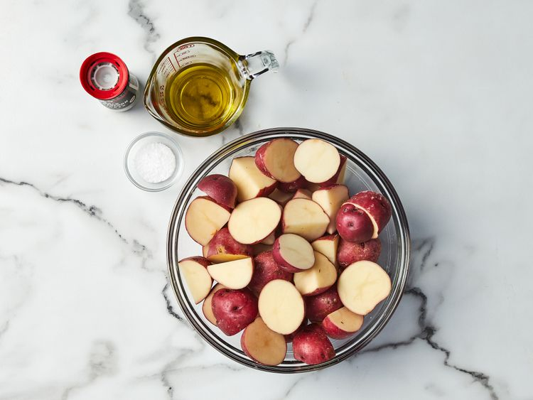
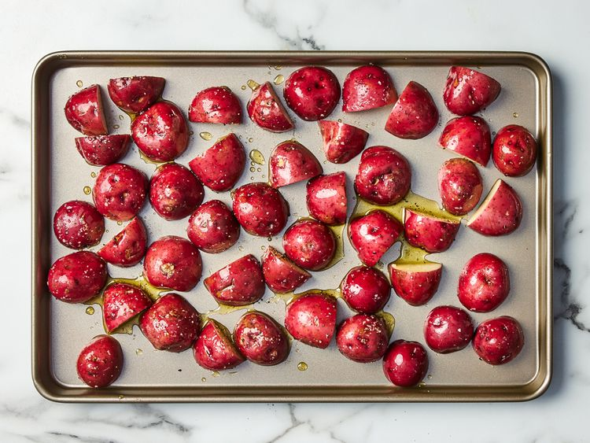
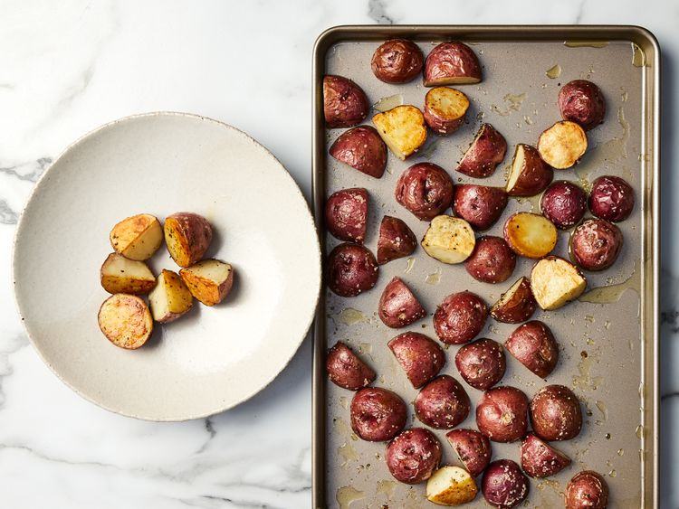

Roasted New Red Potatoes

Description
Roasted red potatoes at their best — plain and simple. Red potatoes are tossed with olive oil, salt, and pepper, then roasted to perfection.
- Prep Time: 5 mins
- Cook Time: 20 mins
- Total Time: 25 mins
- Servings: 8
Ingredients
- 3 pounds small red new potatoes, halved
- ¼ cup olive oil
- 1 teaspoon salt and freshly ground black pepper
Directions
-
Step 1
Gather all ingredients. Preheat the oven to 400 degrees F (200 degrees C) and adjust the oven rack to the lowest position.
 -
Step 2
Toss potatoes with oil, salt, and pepper in a bowl. Arrange, cut-side down, on a rimmed cookie sheet or jellyroll pan.
 -
Step 3
Roast potatoes in the preheated oven until tender and golden brown, 20 to 30 minutes. Transfer to a serving dish.
 -
Step 4
Serve and enjoy!
Nutrition Facts (per serving)
- 179 Calories
- 7g Fat
- 27g Carbs
- 3g Protein